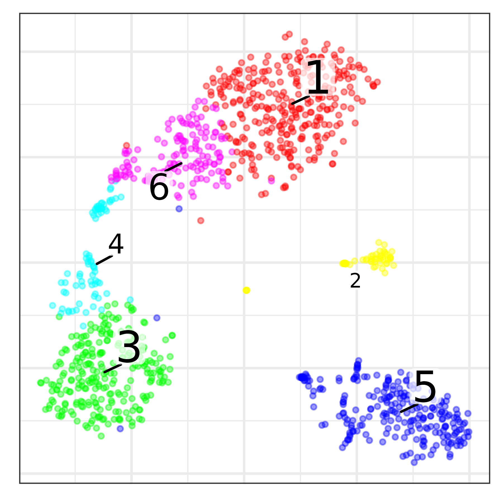
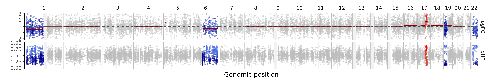

The Numbat haplotype-aware HMM leverages population-based phasing to sensitively detect CNVs from gene expression data. It can be used to analyze scRNA-seq (after aggregating cells into "pseudobulks") as well as bulk RNA-seq data. In this tutorial, we will walk through some examples of both use cases.
Analyzing scRNA-seq data
allele_counts = fread('http://pklab.med.harvard.edu/teng/data/hmm_example/TNBC1_allele_counts.tsv.gz')
gene_counts = readRDS(url('http://pklab.med.harvard.edu/teng/data/hmm_example/TNBC1_gene_counts.rds'))
pagoda = readRDS(url('http://pklab.med.harvard.edu/teng/data/con_TNBC1.rds'))In scRNA-seq data, say we have some a priori knowledge of cell groupings.
pagoda$plotEmbedding() We can then aggregate cells by cluster and run HMM on each cell population to discover CNVs.
clusters = pagoda$clusters$PCA$multilevel
bulks = list()
for (cluster in c('1','3','5')) {
cells = names(clusters[clusters == cluster])
bulks[[cluster]] = get_bulk(
gene_counts[,cells],
ref_hca,
allele_counts %>% filter(cell %in% cells),
gtf_hg38,
genetic_map_hg38
) %>%
mutate(sample = cluster)
bulks[[cluster]] = bulks[[cluster]] %>% analyze_bulk(t = 1e-5)
}
bind_rows(bulks) %>% plot_bulks()
Analyzing bulk RNA-seq data
The Numbat HMM can also be used to detect CNVs from bulk RNA-seq data.
allele_counts = fread('http://pklab.med.harvard.edu/teng/data/hmm_example/MN-5_TUMOR_allele_counts.tsv.gz')
gene_counts = readRDS(url('http://pklab.med.harvard.edu/teng/data/hmm_example/MN_gene_counts.rds'))Sample MN-1037 has a diploid genome so we can use it to create a reference expression profile.
## MN-1037_TUMOR
## 7SK 0.000000e+00
## A1BG 1.107976e-06
## A1BG-AS1 5.003764e-07
## A1CF 3.574117e-08
## A2ML1 3.931529e-07
## A4GALT 9.314150e-05We can now analyze samples using the Numbat HMM.
sample = 'MN-5_TUMOR'
bulk = get_bulk(
count_mat = gene_counts[,sample,drop=F],
df_allele = allele_counts,
lambdas_ref = ref_internal,
genetic_map = genetic_map_hg38,
gtf = gtf_hg38
) %>%
analyze_bulk()
bulk %>% plot_psbulk(min_depth = 15)